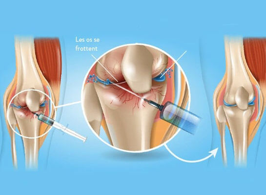
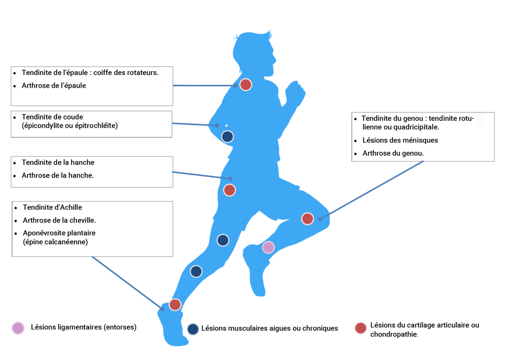

Injections de PRP : Plasma Riche en Plaquettes
Le PRP, ou Plasma Riche en Plaquettes (Platelet Rich Plasma), est un plasma sanguin enrichi en plaquettes par un processus de centrifugation.
Le PRP, obtenu à partir du propre sang du patient (sang autologue), contient divers facteurs de croissance capables de stimuler la régénération de certains tissu
Quels sont les bénéfices d’une injection de PRP ?
Les injections de PRP (Plasma Riche en Plaquettes) sont reconnues pour leur excellente sécurité et leur efficacité clinique.
1. Efficacité Clinique :
- Réduction de la douleur et amélioration de la fonction : Le PRP est utilisé pour traiter diverses affections, telles que l’arthrose, les lésions tendineuses et musculaires, en stimulant la régénération des tissus et en réduisant la douleur.
- Récupération accélérée : Les facteurs de croissance présents dans le PRP favorisent une guérison plus rapide et une meilleure récupération des tissus endommagés.
2. Sécurité Exceptionnelle :
- Aucun événement indésirable majeur : Les études cliniques et les expériences des patients n’ont rapporté aucun événement indésirable majeur lié aux injections de PRP.
- Absence d’effets secondaires à long terme : À ce jour, aucun effet secondaire à long terme n’a été observé, ce qui renforce la confiance dans ce traitement.
3. Tolérance et Répétition des Injections :
- Injections répétées sans inconvénients : Lorsque les bénéfices cliniques diminuent avec le temps, des injections supplémentaires peuvent être administrées sans inconvénients. Cela permet de prolonger les effets bénéfiques du traitement.
- Adaptabilité du traitement : La possibilité de répéter les injections offre une flexibilité dans la gestion des affections chroniques, permettant d’ajuster le traitement en fonction des besoins individuels des patients.
En résumé, les injections de PRP offrent une solution sûre et efficace pour le traitement de nombreuses affections, avec une excellente tolérance et la possibilité de répéter les injections pour maintenir les bénéfices cliniques 
Qui peut bénéficier d’une injection de PRP ?
Le traitement par PRP a gagné en popularité grâce aux résultats impressionnants obtenus par des athlètes de haut niveau. Cependant, tous les sportifs, qu’ils soient amateurs ou professionnels, peuvent bénéficier de ce traitement.
L’injection de PRP peut également apporter un soulagement significatif aux patients de tous âges, souffrant de diverses pathologies. Que ce soit pour des blessures sportives, des douleurs chroniques ou des affections dégénératives, le PRP offre une solution prometteuse.
Dans les cas d’arthrose, les résultats sont particulièrement favorables chez les patients plus jeunes et/ou ceux dont l’arthrose est à un stade peu avancé. Cela permet de ralentir la progression de la maladie et d’améliorer la qualité de vie.
Principes du traitement par PRP :
Les plaquettes sont des composants essentiels du sang, jouant un rôle crucial dans la coagulation et la cicatrisation. Bien que le sang ne contienne que 4% de plaquettes (contre 93% de globules rouges), leur importance est indéniable.
- Processus de centrifugation : La centrifugation permet d’obtenir un plasma riche en plaquettes, concentré en facteurs de croissance. Ces facteurs stimulent la cicatrisation et contiennent des biomolécules aux propriétés anti-inflammatoires et antalgiques.
- Action des facteurs de croissance : Les facteurs de croissance libérés en grand nombre par les plaquettes activent les cellules souches locales, favorisant ainsi la cicatrisation des tissus lésés. Ce processus réduit également l’inflammation et les hémorragies, accélérant la guérison.
Que peut-on traiter avec le PRP ?
Les injections de PRP pour traiter l’arthrose
Les injections de PRP permettent de ralentir la progression de la maladie, de diminuer la douleur et l’inflammation et d’améliorer la mobilité et la fonction.
A la différence des traitements par anti-inflammatoires non stéroïdiens ou des injections intra-articulaire de corticoïdes, elle est dépourvue d’effets indésirables .
Des études récentes ont prouvé que les injections de PRP sont plus efficaces que les injections d’acide hyaluronique dans l’arthrose du genou.
Le PRP est un traitement efficace, particulièrement dans les stades précoce de l’arthrose (grade 2 ou 3). Les résultats peuvent être améliorés et maintenus par la répétition annuelle d’injections.
Le PRP favorise la prolifération des cellules souches qui se spécialisent en cartilage et en tissu osseux. Le geste peut être associé à une intervention chirurgicale sous arthroscopie pour préparer l’articulation et permettre aux cellules souches de proliférer à l’intérieur de la zone atteinte.
D’autres études ont également démontré que le PRP permet une augmentation de la production naturelle d’acide hyaluronique à l’intérieur de l’articulation arthrosique.
Un injection de PRP ne peut que stimuler des tissus encore présents : dans les cas plus graves (arthrose de grade 4) ou l’os est exposé suite à la disparition du cartilage, l’injection de PRP n’est pas efficace.
Les injections de PRP pour traiter les lésions de tendons (tendinite ou tendinopathie)
Les injections de PRP (Plasma Riche en Plaquettes) sont particulièrement efficaces pour traiter les lésions de tendons, telles que les tendinites ou les tendinopathies. Les facteurs de croissance contenus dans le PRP stimulent la cicatrisation des tendons fissurés ou enflammés.
- Pourquoi les tendons cicatrisent-ils difficilement ?
Les tendons et les ligaments sont principalement composés de collagène et sont peu vascularisés, ce qui rend la cicatrisation des lésions plus difficile et plus lente.
Le PRP, lorsqu’il est injecté dans la zone lésée, libère des facteurs de croissance hautement concentrés qui stimulent la synthèse du collagène et accélèrent la cicatrisation des tissus. Cela permet de renforcer et de réparer les tendons endommagés de manière plus efficace.
Les injections de PRP pour traiter les lésions musculaires
Les lésions musculaires, lorsqu’elles sont correctement diagnostiquées par un bilan d’imagerie, peuvent être efficacement traitées par des injections de PRP (Plasma Riche en Plaquettes). Ce traitement est particulièrement efficace s’il est initié dans les premiers jours suivant la blessure.
Après l’injection, il est recommandé de se reposer pendant 48 heures pour permettre au PRP d’agir efficacement.
Une reprise progressive des activités sportives est généralement possible dans les semaines suivant l’injection. Cette approche permet de renforcer progressivement le muscle et de prévenir les récidives.
Les injections de PRP associées à une chirurgie
Les PRP peuvent améliorer la cicatrisation des tendons après une réparation de la coiffe des rotateurs, faciliter la cicatrisation d’un ménisque après une suture méniscale, stimuler la cicatrisation du cartilage après une intervention de perforations de Pridie ou une mosaicplastie.
Procédure : prélèvement, préparation et injection du PRP
Vidéo : Comment se déroule une injection de PRP ?
La durée totale de la procédure au cabinet est généralement d’environ 15 minutes.
- la prise de sang : 15 ml sont prélevés sur une veine du coude comme pour une prise de sang classique.
- la centrifugation : Le sang total prélevé est placé dans une centrifugeuse pendant 5 minutes à 1500 tours / min On conserve uniquement le sérum (5 ml) qui contient les plaquettes.
- l’injection : Après une désinfection soignée, le concentré plaquettaire est injecté de façon stérile au niveau de la lésion.
- la période de l’injection : Pour certaines injections, un temps de repos en salle d’attente peut être nécessaire. Le muscle, le tendon ou l’articulation traités resteront fragiles pendant les 21 premiers jours. La cicatrisation se poursuivra durant plusieurs semaines et votre médecin pourra l’accompagner par des séances de kinésithérapie.
Vidéo : Injections de PRP : Plasma Riche en Plaquettes